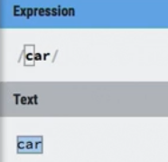
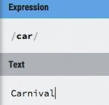
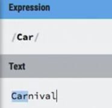
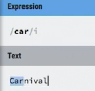
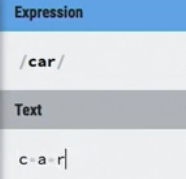
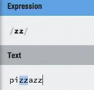
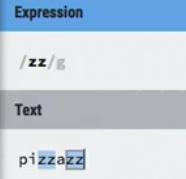
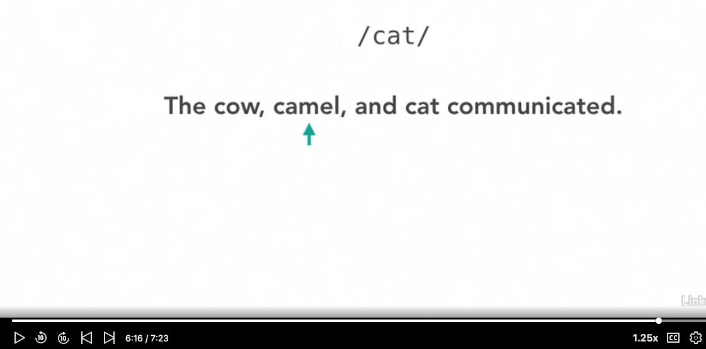

literal matches
/car/ matches "car"
/car/ matches "carnival"
searches are case sensitive by default
   spcaes are characters so /car/ would not match
c a r
standard vs global matching
Standard (non-global) matching
by default the regex will be the first (leftmost) match in the document
for example /zz/ will only match the first two zz's of "pizzazz"
Global matching
will match all two zz's thoughtout document so /zz/ would match "pizzazz"
 IMPORTANT EXPLANATION
In the linkedin video Chapter2-Lesson1_LiteralCharacters at 6:15, kevin explains an importan point of how the computer goes about searching the string for the Regular expression, watch this
